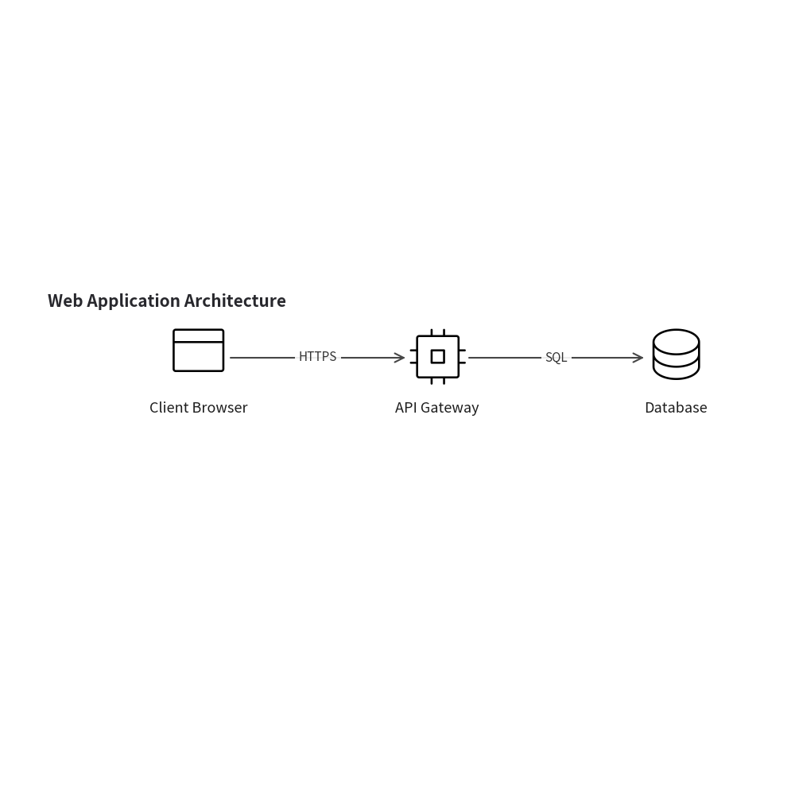
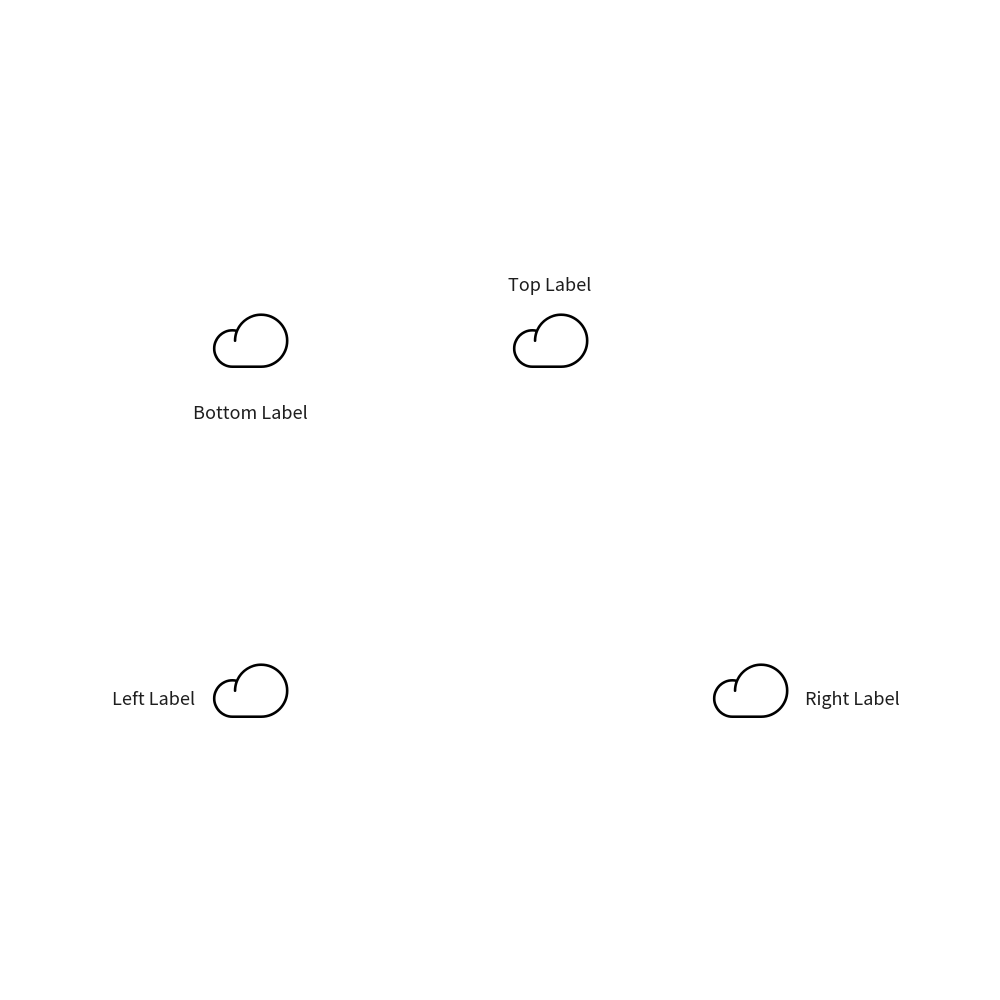
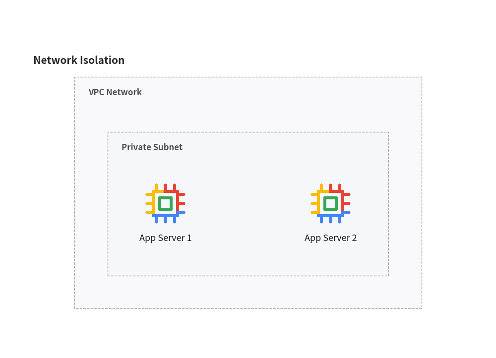
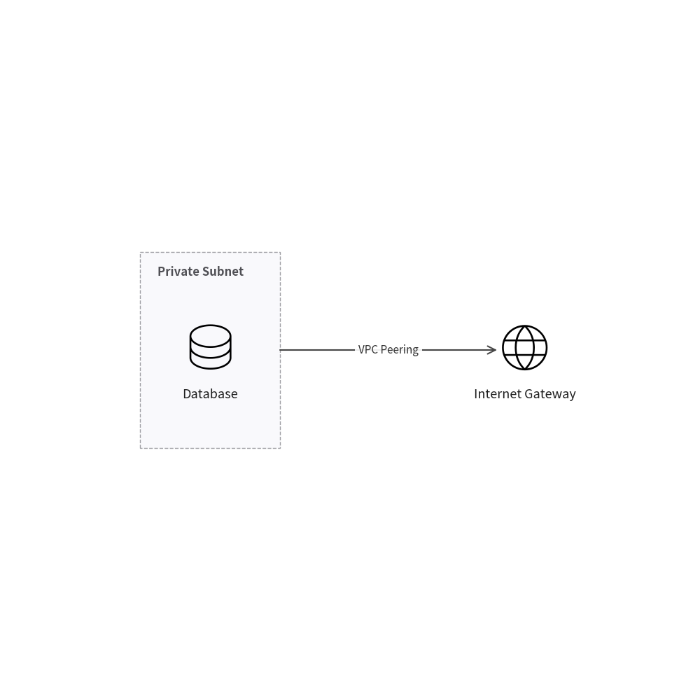
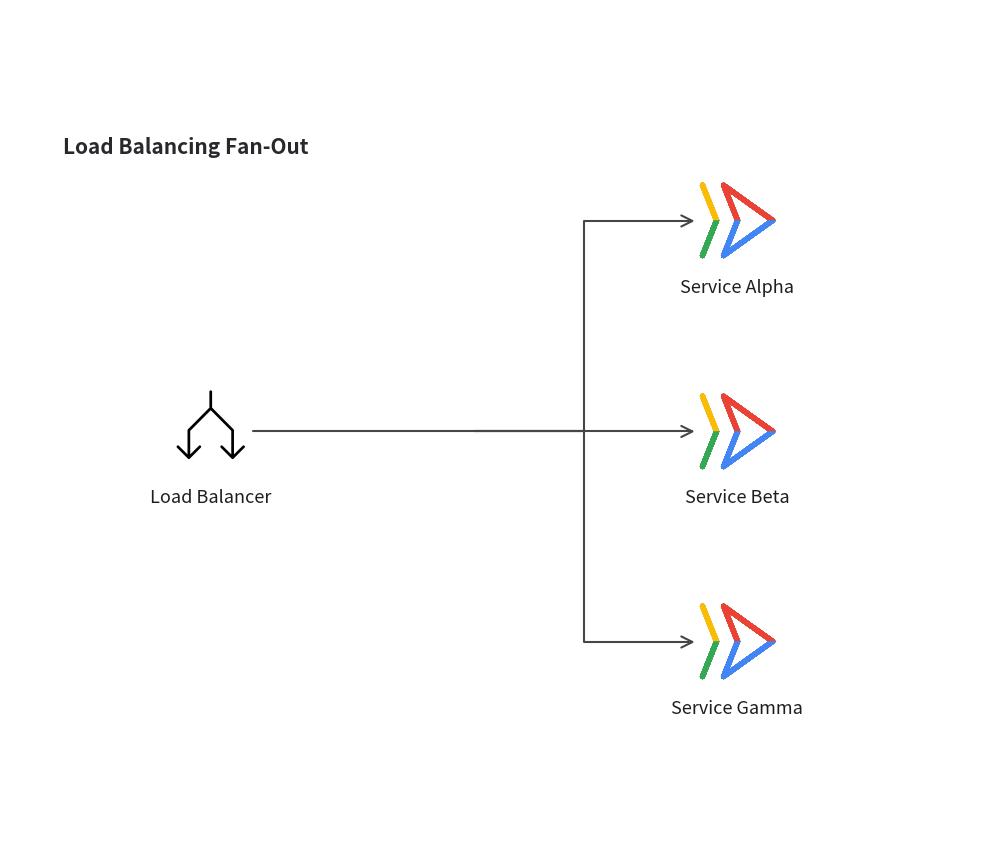
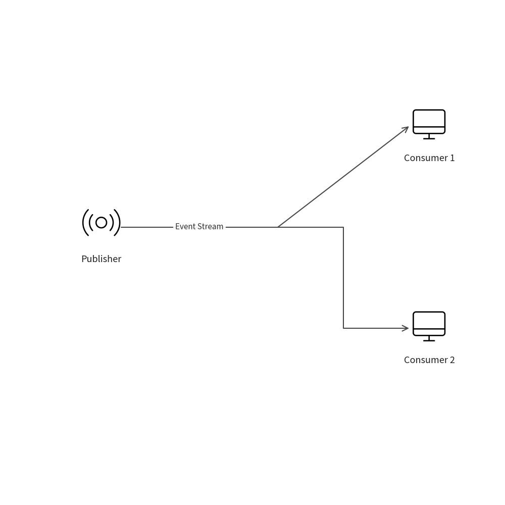
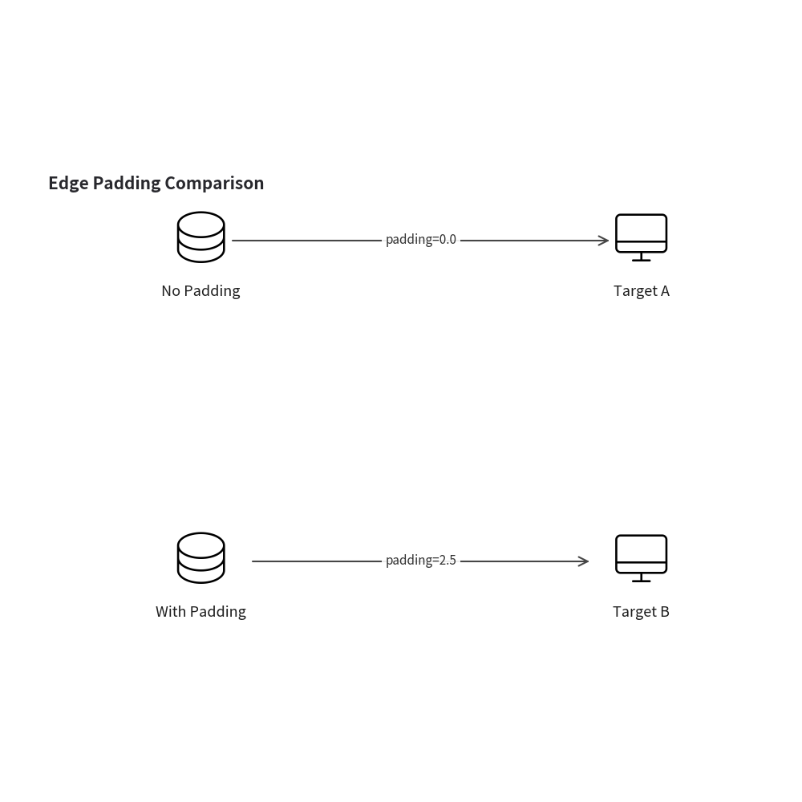
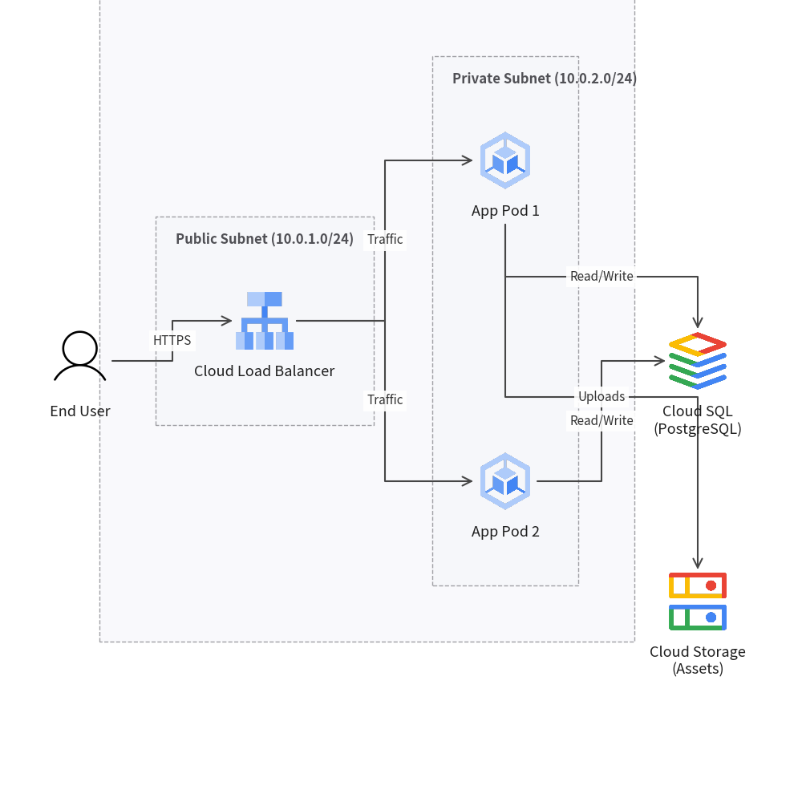

Architecture Diagrams
drawlib.diagrams.architecture provides a declarative, pure-Python architecture diagramming framework.
Unlike external tools that rely on Graphviz or static automatic layout engines, Drawlib gives you precise coordinate control, seamless integration with Drawlib's icon libraries (GCP and Phosphor), custom image support, and full access to Drawlib's Style system.
1. Core Concepts
Architecture diagrams consist of 5 primary components:
| Component | Class | Description |
|---|---|---|
| Container | Diagram |
Top-level container managing nodes, groups, edges, and rendering. |
| Vertex | Node |
An entity or service (server, database, user). (x, y) sets the icon center. |
| Boundary | NodeGroup |
A cluster or boundary box (VPC, Subnet, Region) that automatically bounds its children. |
| Connection | Edge |
A connection line between components with routing, arrowheads, and labels. |
| Waypoint | Junction |
A lightweight connectable point for multi-way branching and bus lines. |
2. Quick Start
Below is a simple client-server architecture diagram connecting an end user to an API server and a database:
from drawlib import canvas
from drawlib.diagrams.architecture import Diagram, Node, PhosphorIcon
canvas.initialize()
d = Diagram(title="Web Application Architecture")
# Add nodes (coordinates specify the icon center)
client = d.add(Node("Client Browser", icon=PhosphorIcon.BROWSER, icon_size=8.0), (20.0, 50.0))
server = d.add(Node("API Gateway", icon=PhosphorIcon.CPU, icon_size=8.0), (50.0, 50.0))
db = d.add(Node("Database", icon=PhosphorIcon.DATABASE, icon_size=8.0), (80.0, 50.0))
# Connect nodes
d.connect(client, server, label="HTTPS")
d.connect(server, db, label="SQL")
d.draw(xy=(5.0, 5.0))

3. Node Coordinates and Label Positioning
3.1 Icon-Centric Coordinates
In Drawlib architecture diagrams, the (x, y) coordinate of a Node strictly specifies the center of its icon.
The text label is positioned relative to the icon and does not shift the icon's position. This guarantees that:
- Aligned nodes maintain perfectly straight horizontal and vertical connection lines.
- Changing or translating label text never breaks existing wire routing.
3.2 Label Placement
You can place labels on any side of the icon using text_position:
"bottom"(default): Centered below the icon."top": Centered above the icon."left": Aligned to the left of the icon."right": Aligned to the right of the icon.
from drawlib import canvas
from drawlib.diagrams.architecture import Diagram, Node, PhosphorIcon
canvas.initialize()
d = Diagram()
d.add(Node("Bottom Label", icon=PhosphorIcon.CLOUD, icon_size=8.0, text_position="bottom"), (20.0, 60.0))
d.add(Node("Top Label", icon=PhosphorIcon.CLOUD, icon_size=8.0, text_position="top"), (50.0, 60.0))
d.add(Node("Left Label", icon=PhosphorIcon.CLOUD, icon_size=8.0, text_position="left"), (20.0, 25.0))
d.add(Node("Right Label", icon=PhosphorIcon.CLOUD, icon_size=8.0, text_position="right"), (70.0, 25.0))
d.draw(xy=(5.0, 5.0))

4. Groups and Boundaries (NodeGroup)
NodeGroup represents logical or network boundaries, such as a VPC network, Kubernetes cluster, or availability zone.
4.1 Automatic Bounding Box Calculation
NodeGroup automatically computes its bounding box to enclose all child nodes and nested groups, applying configurable padding:
from drawlib import canvas
from drawlib.diagrams.architecture import Diagram, GcpIcon, Node, NodeGroup
canvas.initialize()
d = Diagram(title="Network Isolation")
# Outer boundary
vpc = d.add(NodeGroup(title="VPC Network", padding=6.0), (10.0, 10.0))
# Nested subnet
subnet = vpc.add(NodeGroup(title="Private Subnet", padding=5.0), (10.0, 10.0))
vm1 = subnet.add(Node("App Server 1", icon=GcpIcon.COMPUTE_ENGINE, icon_size=8.0), (15.0, 50.0))
vm2 = subnet.add(Node("App Server 2", icon=GcpIcon.COMPUTE_ENGINE, icon_size=8.0), (15.0, 20.0))
d.draw(xy=(5.0, 5.0))

4.2 Group Boundaries as Connectables
NodeGroup is a first-class Connectable. You can connect a group's boundary directly to a Node, another NodeGroup, or a Junction. The line automatically anchors to the appropriate edge of the boundary box:
from drawlib import canvas
from drawlib.diagrams.architecture import Diagram, Node, NodeGroup, PhosphorIcon
canvas.initialize()
d = Diagram()
# Subnet group
subnet = d.add(NodeGroup(title="Private Subnet", padding=6.0), (10.0, 20.0))
db = subnet.add(Node("Database", icon=PhosphorIcon.DATABASE, icon_size=8.0), (15.0, 25.0))
# External element
gateway = d.add(Node("Internet Gateway", icon=PhosphorIcon.GLOBE, icon_size=8.0), (70.0, 45.0))
# Connect from the group boundary to the gateway
subnet.connect(gateway, label="VPC Peering")
d.draw(xy=(5.0, 5.0))

5. Connections and Routing (Edge & Junction)
Connections between nodes support both orthogonal (right-angle) and direct routing, as well as explicit intermediate waypoints.
5.1 One-to-Many Branching with node.fork()
The node.fork() method provides a clean shortcut for 1-to-N branching via an internal Junction:
from drawlib import canvas
from drawlib.diagrams.architecture import Diagram, GcpIcon, Node, PhosphorIcon
canvas.initialize()
d = Diagram(title="Load Balancing Fan-Out")
lb = d.add(Node("Load Balancer", icon=PhosphorIcon.ARROWS_SPLIT, icon_size=8.0), (20.0, 50.0))
api1 = d.add(Node("Service Alpha", icon=GcpIcon.CLOUD_RUN, icon_size=8.0), (70.0, 75.0))
api2 = d.add(Node("Service Beta", icon=GcpIcon.CLOUD_RUN, icon_size=8.0), (70.0, 50.0))
api3 = d.add(Node("Service Gamma", icon=GcpIcon.CLOUD_RUN, icon_size=8.0), (70.0, 25.0))
# Branch at X = 45.0
lb.fork([api1, api2, api3], at_x=45.0)
d.draw(xy=(5.0, 5.0))

5.2 Dynamic Waypoint Branching with edge.add_point()
You can turn any point along an edge into a branching junction using edge.add_point(xy):
from drawlib import canvas
from drawlib.diagrams.architecture import Diagram, Node, PhosphorIcon
canvas.initialize()
d = Diagram()
src = d.add(Node("Publisher", icon=PhosphorIcon.BROADCAST, icon_size=8.0), (15.0, 50.0))
sub1 = d.add(Node("Consumer 1", icon=PhosphorIcon.DESKTOP, icon_size=8.0), (80.0, 70.0))
sub2 = d.add(Node("Consumer 2", icon=PhosphorIcon.DESKTOP, icon_size=8.0), (80.0, 30.0))
# Main stream connection
main_edge = d.connect(src, sub1, label="Event Stream")
# Branch off the stream at (50.0, 50.0)
junction = main_edge.add_point((50.0, 50.0))
junction.connect(sub2)
d.draw(xy=(5.0, 5.0))

5.3 Edge Padding (padding)
By default, connection lines anchor directly onto the outer boundary of nodes or groups. You can configure padding to leave a clean gap between components and connection line endpoints or arrowheads:
- Symmetric padding:
padding=2.5leaves 2.5 coordinate units of margin at both endpoints. - Asymmetric padding:
padding=(start_pad, end_pad)sets independent margins for the source and target.
padding is supported across all connection methods:
d.connect(source, target, padding=2.0)source.connect(target, padding=(1.0, 3.0))edge.set_padding(2.0)node.fork(targets, padding=2.0)(automatically protects junction endpoints while applying padding to nodes)
from drawlib import canvas
from drawlib.diagrams.architecture import Diagram, Node, PhosphorIcon
canvas.initialize()
d = Diagram(title="Edge Padding Comparison")
# Without padding (line touches boundary)
n1 = d.add(Node("No Padding", icon=PhosphorIcon.DATABASE, icon_size=8.0), (20.0, 65.0))
n2 = d.add(Node("Target A", icon=PhosphorIcon.DESKTOP, icon_size=8.0), (75.0, 65.0))
d.connect(n1, n2, label="padding=0.0")
# With symmetric padding
n3 = d.add(Node("With Padding", icon=PhosphorIcon.DATABASE, icon_size=8.0), (20.0, 25.0))
n4 = d.add(Node("Target B", icon=PhosphorIcon.DESKTOP, icon_size=8.0), (75.0, 25.0))
d.connect(n3, n4, label="padding=2.5", padding=2.5)
d.draw(xy=(5.0, 5.0))

6. Icons and Custom Images
6.1 Built-in Icon Sets
GcpIcon: 259 official Google Cloud Platform service icons (GcpIcon.COMPUTE_ENGINE,GcpIcon.CLOUD_SQL,GcpIcon.BIGQUERY, etc.).PhosphorIcon: 1531 modern interface and system icons (PhosphorIcon.USER,PhosphorIcon.DATABASE,PhosphorIcon.BROWSER, etc.).
6.2 Custom Icons (CustomIcon)
You can wrap any external image (file path, Dimage, or PIL Image) in a CustomIcon:
from PIL import Image
from drawlib.diagrams.architecture import CustomIcon, Node
# From file path
custom_1 = CustomIcon("assets/my_custom_service.png")
# From PIL Image
pil_image = Image.open("assets/logo.png")
custom_2 = CustomIcon(pil_image)
node = Node("Custom Service", icon=custom_1, icon_size=10.0)
7. Complete Production Architecture Example
Here is a full multi-tier GCP VPC cloud architecture example combining nested subnets, official GCP icons, orthogonal bus lines, and custom styled labels:
from drawlib import canvas
from drawlib.diagrams.architecture import Diagram, GcpIcon, Node, NodeGroup, PhosphorIcon
canvas.initialize()
d = Diagram(title="GCP Production Cloud Architecture")
# VPC Network boundary
vpc = d.add(NodeGroup(title="VPC Network (10.0.0.0/16)", padding=7.0), (8.0, 10.0))
# Public Subnet
public_subnet = vpc.add(NodeGroup(title="Public Subnet (10.0.1.0/24)", padding=5.0), (5.0, 5.0))
lb = public_subnet.add(Node("Cloud Load Balancer", icon=GcpIcon.CLOUD_LOAD_BALANCING, icon_size=8.0), (15.0, 40.0))
# Private Subnet
private_subnet = vpc.add(NodeGroup(title="Private Subnet (10.0.2.0/24)", padding=5.0), (35.0, 5.0))
gke1 = private_subnet.add(Node("App Pod 1", icon=GcpIcon.GOOGLE_KUBERNETES_ENGINE, icon_size=8.0), (15.0, 60.0))
gke2 = private_subnet.add(Node("App Pod 2", icon=GcpIcon.GOOGLE_KUBERNETES_ENGINE, icon_size=8.0), (15.0, 20.0))
# External elements
user = d.add(Node("End User", icon=PhosphorIcon.USER, icon_size=8.0), (5.0, 50.0))
cloud_sql = d.add(Node("Cloud SQL\n(PostgreSQL)", icon=GcpIcon.CLOUD_SQL, icon_size=8.0), (82.0, 50.0))
gcs = d.add(Node("Cloud Storage\n(Assets)", icon=GcpIcon.CLOUD_STORAGE, icon_size=8.0), (82.0, 20.0))
# Connection flows
d.connect(user, lb, label="HTTPS")
d.connect(lb, gke1, label="Traffic")
d.connect(lb, gke2, label="Traffic")
d.connect(gke1, cloud_sql, label="Read/Write")
d.connect(gke2, cloud_sql, label="Read/Write")
d.connect(gke1, gcs, label="Uploads")
d.draw(xy=(5.0, 5.0))

© 2026 drawlib by Yuichi Ito. Released under the Apache 2.0 License.